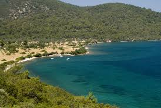
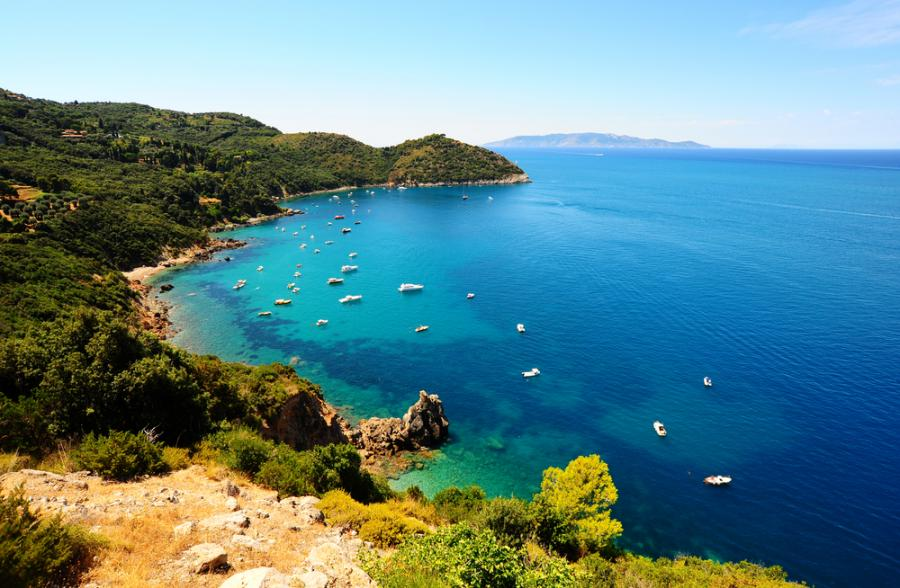
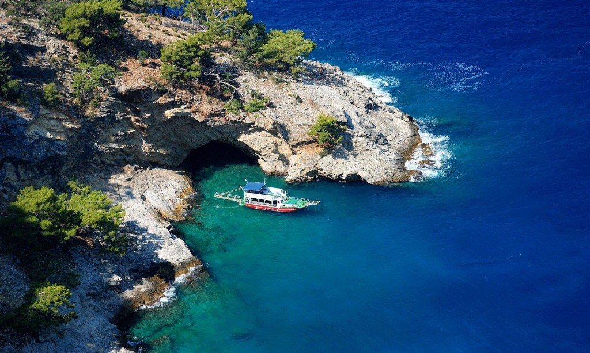

lewe menu
Morze Śródziemne -morze leżące pomiędzy trzema kontynentami: Europą, Afryką i Azją. Powierzchnia morza wynosi około 2,5 mln km2, a zasolenie 33-39‰. Na zachodzie jest połączone Cieśniną Gibraltarską z Oceanem Atlantyckim, przez cieśninę Dardanele łączy się z morzem Marmara i dalej, przez cieśninę Bosfor z Morzem Czarnym, zaś przez Kanał Sueski z Morzem Czerwonym i dalej z Oceanem Indyjskim. Nad Morzem Śródziemnym leżą następujące państwa: Grecja, Cypr, Turcja, Syria, Liban, Izrael, Egipt, Libia, Tunezja, Algeria, Maroko, Hiszpania Francja, Włochy, Malta.

prawe menu